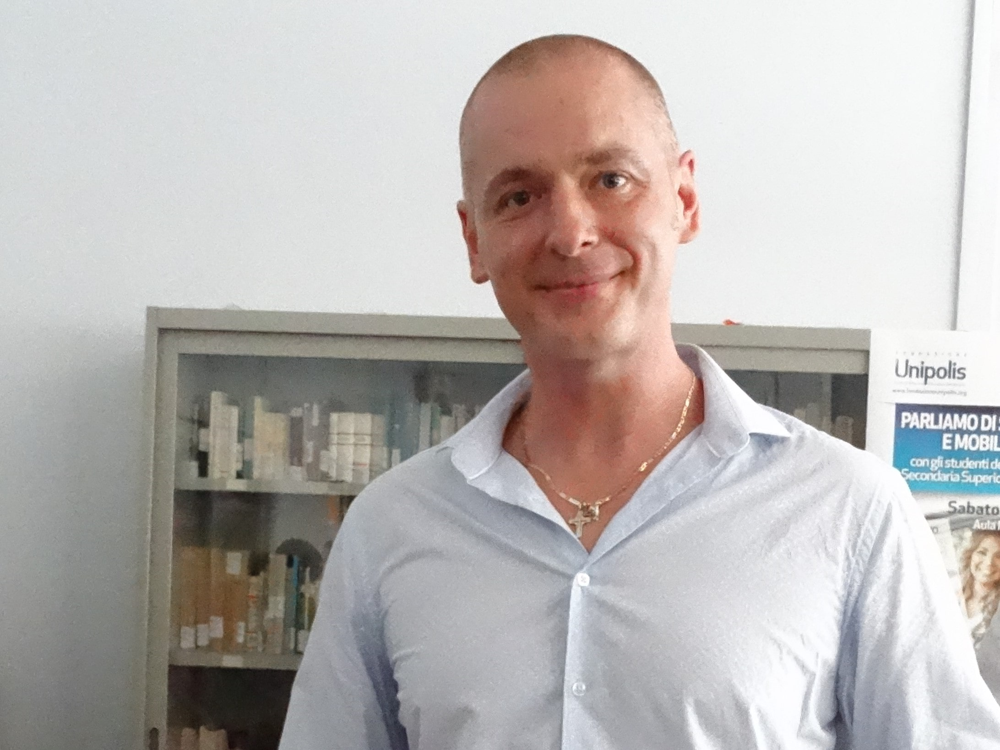

| Mi chiamo Taras Mikhaylovskyy.
 Vengo dall'Ucraina, abito in Italia dal 2000, ho la cittadinanza italiana. Sono un ex operaio che ad un certo punto ha deciso di riprendere gli studi per cambiare la rotta della propria vita. Dopo anni passati a studiare i vari rami di informatica e robotica, ho capito che più di ogni altra cosa mi piace la programmazione web. Perché? Perché creare siti web è come creare un'opera d'arte che tutti ammireranno e useranno per anni a venire. Ti lascia tanto spazio all'immaginazione creativa e quella sintettica. Sogno di trasformare un giorno la mia passione in una professione, lavorando per un'azienda, collaborando con un team di professionisti e dedicandomi giorno dopo giorno a ciò che amo fare di più. Sono una persona curiosa, mi piace studiare, imparare le cose nuove, tenere allenato il mio corpo e il mio cervello. Non sta bene parlare dei propri pregi, spero di avere l'occasione di mostrare le mie abilità coi fatti e non con le parole. |
| Nome: | Taras |
|---|---|
| Cognome: | Mykhaylovskyy |
| Data di nascita: | 23. 05. 1980 |
| Luogo | Ucraina |
| Cittadinanza | Italiana |
| Madrelingua | Ucraina |
| Patente | A, B |
| Ingegneria informatica. Politecnico di Lvov, Ucraina. 1998-2000 |
|---|
| Amministrazione finanza e marketing. Istituto tecnico economico di Portomaggiore, Italia. 2016-2017 |
| IFTS (istruzione e formazione tecnica superiore) 2017-2018 (1000ore) Progettazione di basi di dati, linguaggio SQL. Tecniche di progettazione software AGILE. Programmazione ad oggetti JAVA. Linguaggi per il web: HTML, CSS, WEBIX. Sistemi informatici aziendali ERP. Tecniche di comunicazione e psicologia sociale. Elementi di project management. |
|---|
| Corso JavaScript On Line 2019(70ore) Variabili, istruzioni condizionali, funzioni, loop, array, oggetti. |
| Corso completo sviluppatore Front End, on line 2020 (100ore) Basi di HTML, CSS, JS, Bootstrap, GitHub. Corso avanzato di HTML, CSS, JS, JQuery, Bootstrap. |
|
|
| Tirocinio professionale |
|---|
| Operaio Presso T. P. V. Compound. Argenta (Fe), dal 2008 al 2019. |
| Inglese | Italiano | Russo |
|---|---|---|
| parlato B2 | parlato C2 | parlato C1 |
| scritto B2 | scritto C1 | scritto C1 |
| letto B2 | letto C2 | letto C2 |
| La mia passione sono la programmazione e le lingue. Nel mio tempo libero mi piace praticare sport, hiking, dedicarmi alla fotografia, studiare le lingue o leggere semplicemente un buon libro mentre ascolto musica rilassante. Sono una persona curiosa a cui piace imparare. Odio stare fermo perché la vita è breve, il tempo è fortuna... |